Thuis buitenshuis, midden in Oss
Ontbijt, lunch en borrel aan de Galerij. Een mediterraan getinte kaart uit de open keuken, persoonlijke aandacht en altijd tijd voor een praatje.
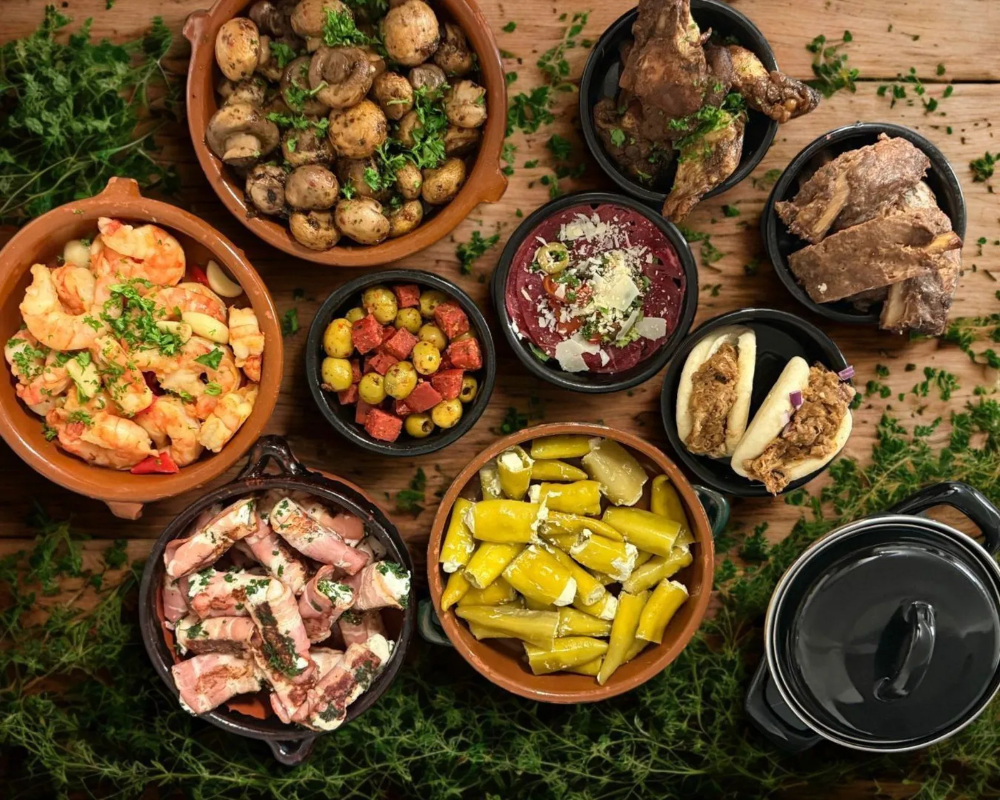
Meer dan voorafentoe
In 2005 zijn Theo en Ina Verhoeven begonnen met Eeterij Voorafentoe, als lunchroom. Theo werkte al 25 jaar in de horeca en vond het tijd voor een eigen zaak, met zijn eigen ideeën en sfeer.
Het pand aan de Galerij, voorheen een juwelier, werd helemaal verbouwd tot horecazaak. In 2015 is alles nog eens verbouwd en aangepast aan de huidige tijd. Theo en Ina zijn erg gehecht aan het Bourgondische en Zuid-Europese leven en eten, en dat zie je terug: in de gemoedelijkheid, de persoonlijke aandacht en natuurlijk in de menukaart.
“Je voelt je niet thuis waar je woont, maar waar ze je begrijpen.”
Of je nu rust wilt pakken, jezelf wilt verwennen of je verhaal wilt delen: passie voor gastvrijheid en liefde voor het vak zijn onze drijfveren.
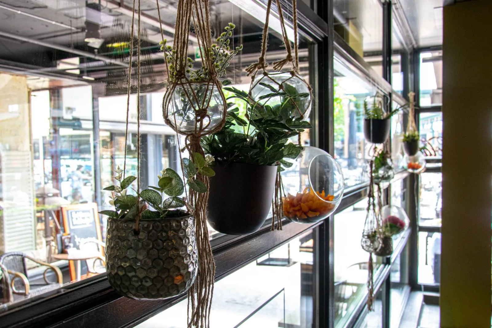
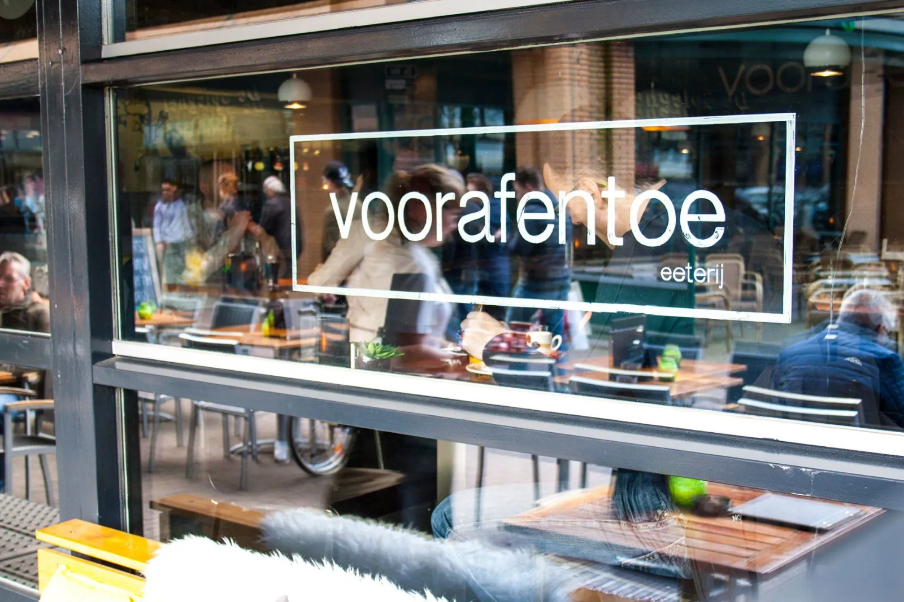
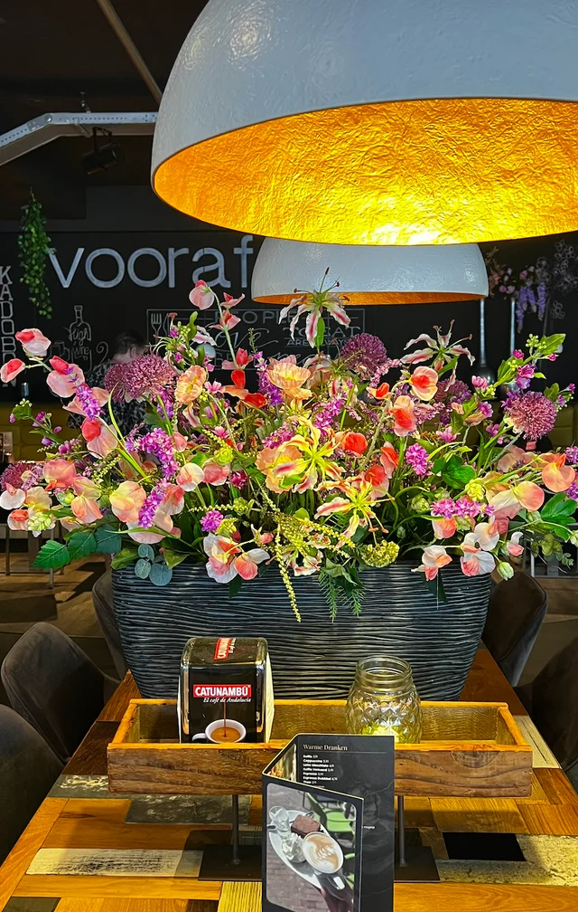
Een open keuken, verse producten
Voorafentoe heeft een open keuken: de kok is betrokken bij de gasten, en jij ruikt en ziet wat er gebeurt. We werken met verse producten die we zelf bereiden tot heerlijke gerechten. De keuken is mediterraan gericht, en dat zie en proef je.
De kaart loopt van gerechten die iedereen kent tot verrassende gerechten voor de liefhebber. Er zijn vegetarische gerechten en we houden rekening met allergieën.
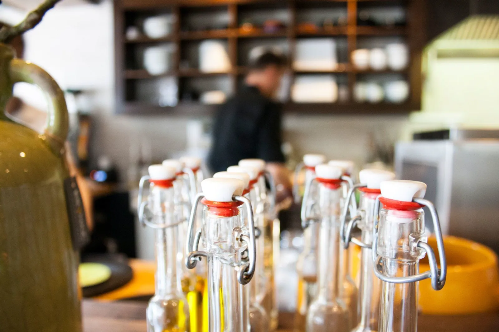
Eetkaart
Een uitgebreide kaart, van het eerste ontbijt tot de borrel. Ook afhalen kan: geef je bestelling telefonisch door.
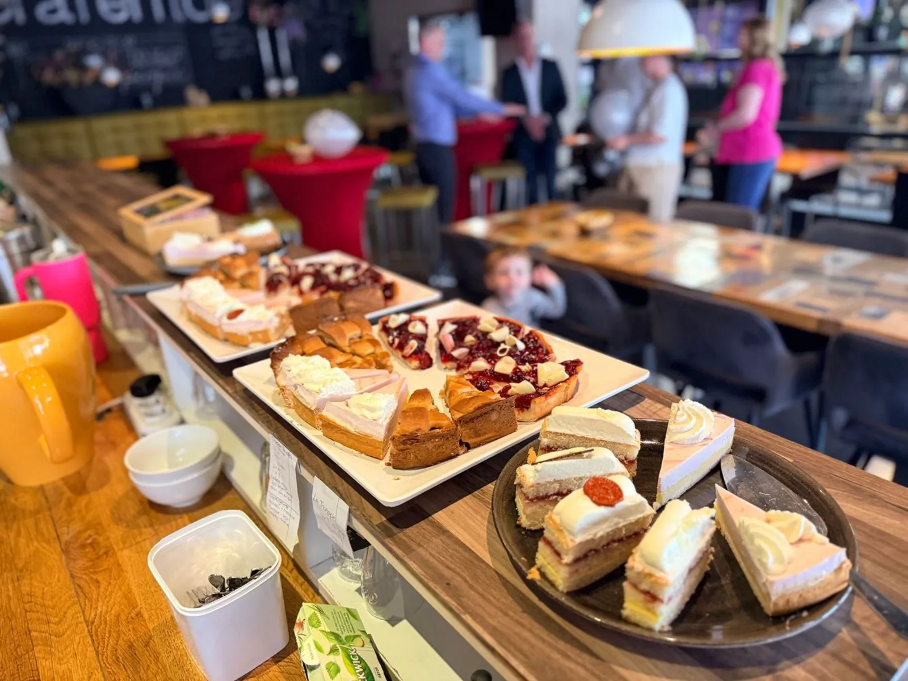
Ons ontbijt is te bestellen tot 12.00 uur.
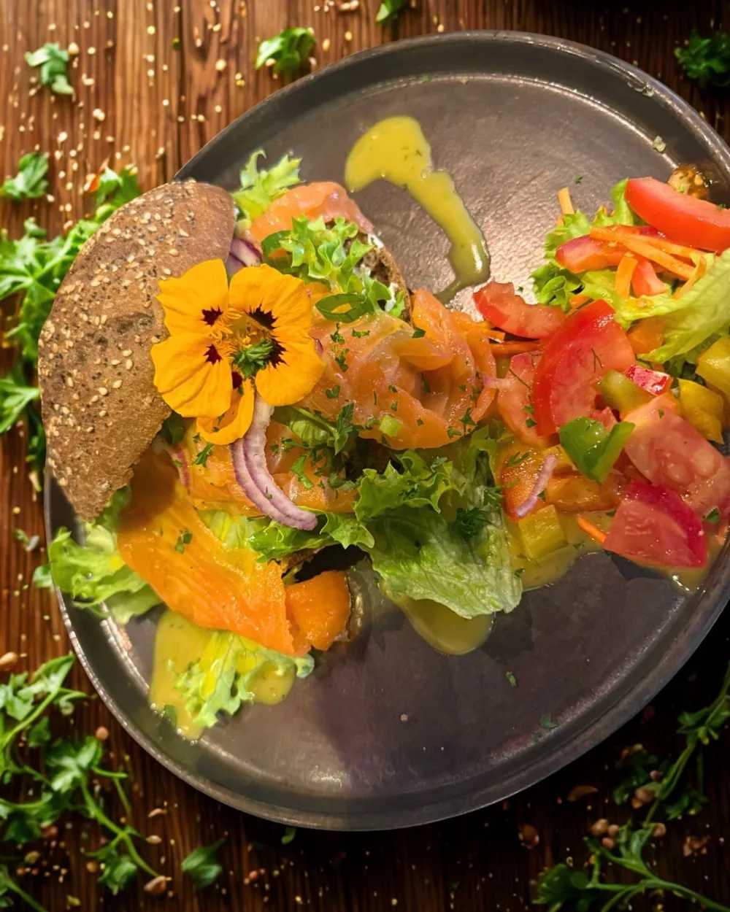
Keuze uit diverse vers gebakken broodjes: Italiaanse bol, pistoletje bruin of wit, focaccia, meergranen bol, sneetjes desembrood. Glutenvrije sneetjes + 1,00.
Vegetarisch
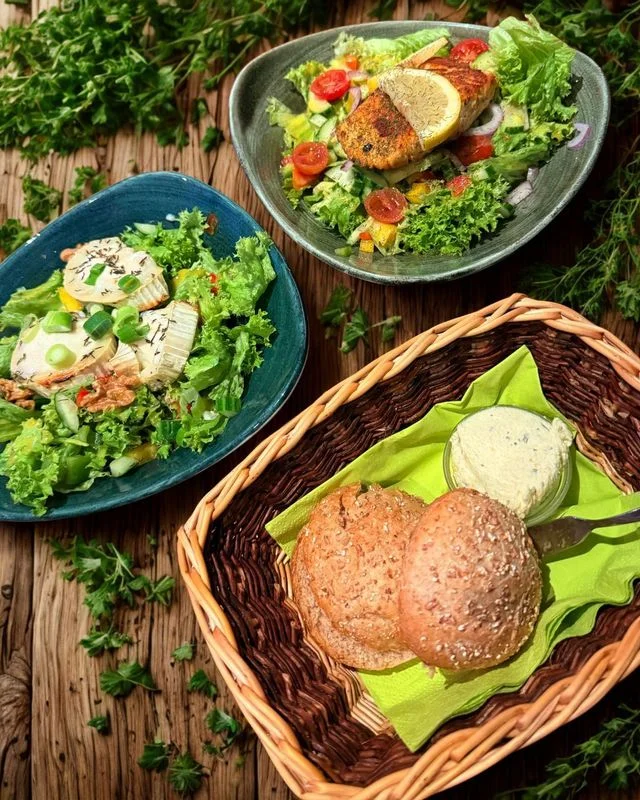
Maaltijdsalades zijn inclusief broodje en kruidenboter.
Vegetarisch
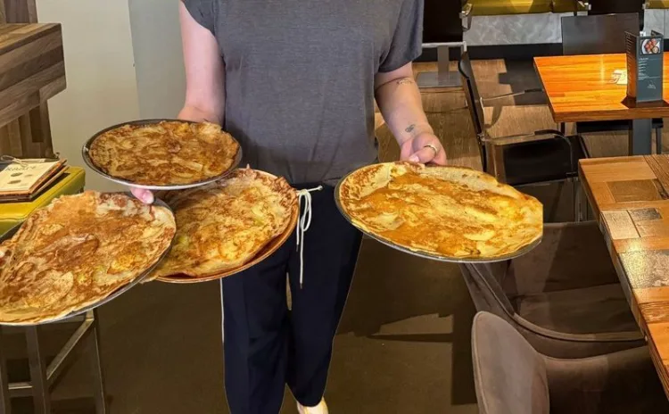
Geserveerd met stroop en poedersuiker.
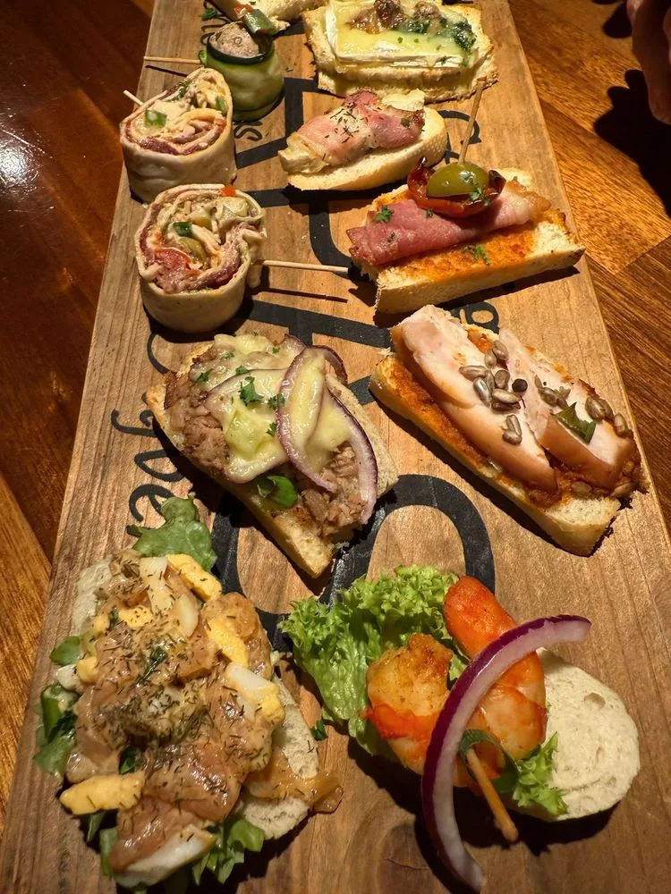
Keuze uit wit, bruin of desembrood. Glutenvrij brood + 1,00. Onze tosti's worden geserveerd met huisgemaakte tostisaus.
Keuze uit wit, bruin of desembrood. Glutenvrij brood + 1,50.
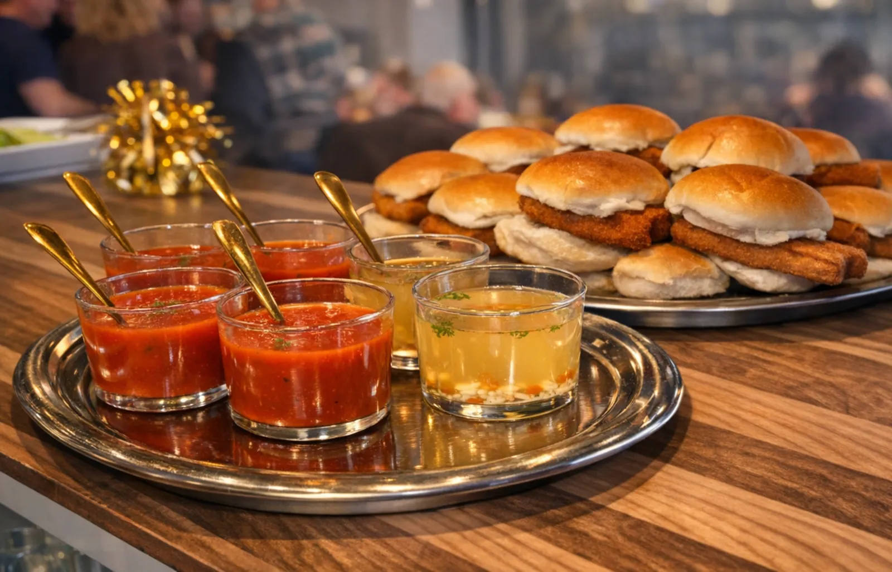
Inclusief mini broodje en boter.
Geserveerd met salade of warme groenten en naar keuze frites of penne met pesto.
Vlees
Saus en extra's
Vis
Vegetarisch
Gerechten met het label vega zijn vegetarisch. Heb je een allergie? Laat het ons weten. We doen ons uiterste best om er rekening mee te houden, maar kunnen in onze kleine, open keuken niet volledig uitsluiten dat gerechten sporen van gluten of andere allergenen bevatten.
Drankkaart
Gezellig borrelen of genieten van een heerlijke koffie.
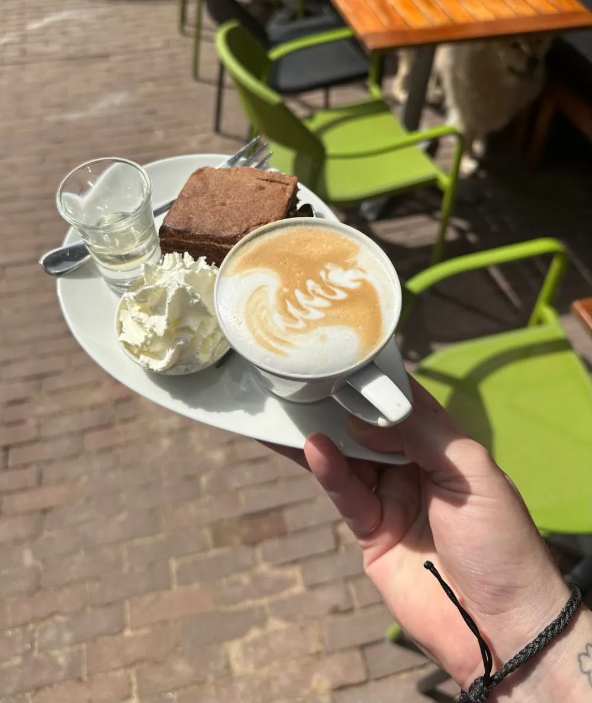
Warme dranken
Speciale koffie, alcoholvrij
Liever soja- of havermelk? Vraag naar de opties.
Speciale koffie met alcohol
Voor bij de koffie
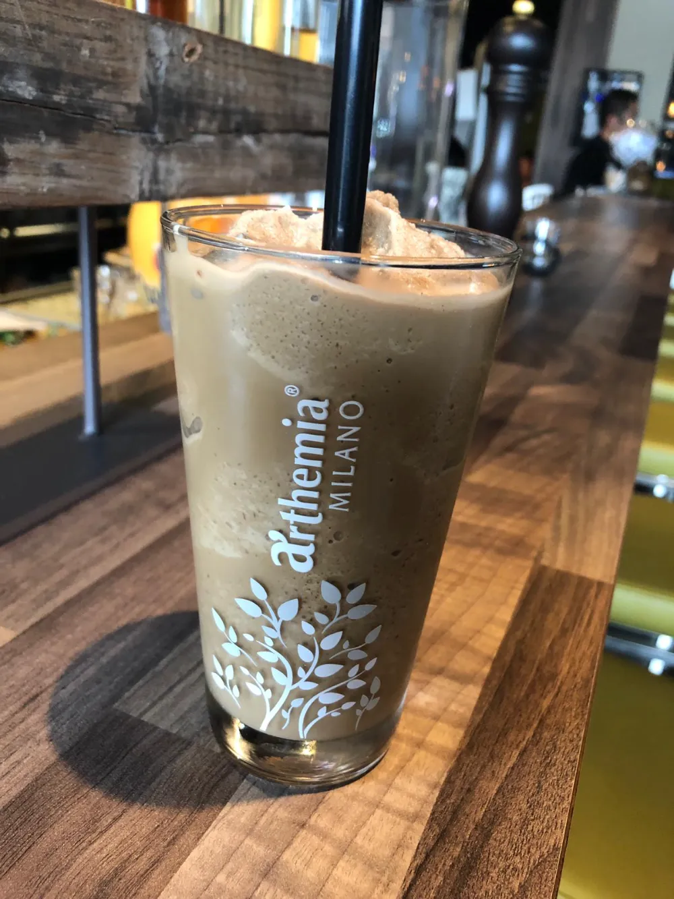
Frisdranken
Smoothies
Alle smoothies worden gemaakt met 100% vers fruitsap. Geen suiker toegevoegd.
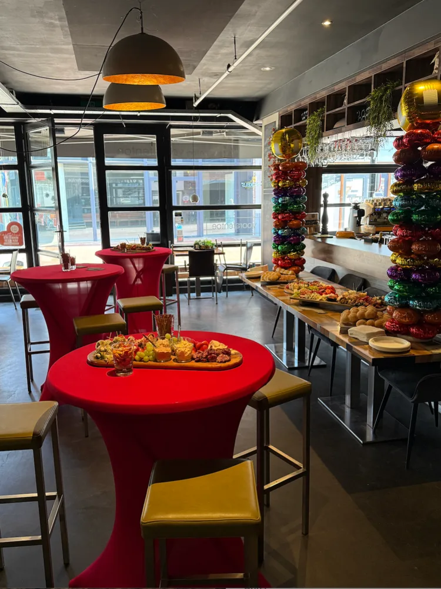
Rood
Wit
Rosé
Port & sherry
Mousserend
High Wine
Wil je gezellig borrelen en bijkletsen? Probeer dan eens onze High Wine: 3 glazen wijn en heerlijke bijbehorende hapjes.
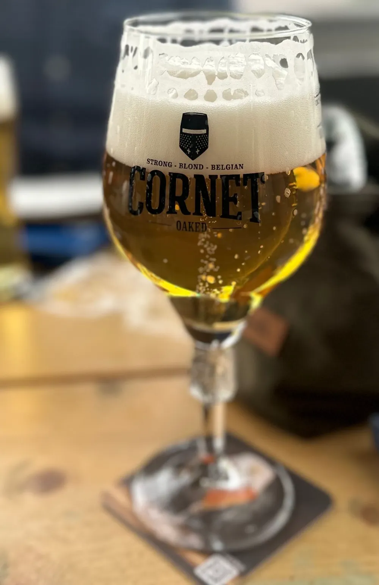
Van de tap (Swinckels)
- Pils 0,25
- Pils 0,50
Op fles
- Fruitage by Rodenbach
- Weihenstephaner Hefeweissbier
- Cornet
- La Trappe Witte Trappist
- La Trappe Blond
- La Trappe Tripel
- La Trappe Dubbel
- La Trappe Epos
- La Trappe Nillis
- Swinckels’ 0%
- Bavaria Radler 0%
Gedistilleerd
- Diverse mixdranken
- Cointreau
- Grand Marnier
- Amaretto
- Tia Maria
- Licor 43
- Baileys
- Jenever
- Whisky (Jameson)
- Bacardi rum
- Vodka
- The Kraken black spiced rum
- Gin
Lekker bij de borrel: kijk ook bij de tapas op de eetkaart.
Afhalen
Naast onze gerechten in het restaurant kun je bij ons ook terecht voor verse afhaalbroodjes, salades en koffie. Alles wordt vers bereid en snel voor je klaargemaakt, zodat je het makkelijk meeneemt voor thuis of onderweg.
Bestellen doe je door te bellen naar 0412 632 636 of door gezellig binnen te lopen. We helpen je graag.
Bel om te bestellenDranken
Broodjes
Salades
Iets te vieren?
Op zoek naar een sfeervolle feestlocatie in Oss voor een verjaardag, jubileum of ander bijzonder moment? Onze locatie in het centrum van Oss is te huur voor feesten, borrels en gezellige bijeenkomsten met vrienden, familie of collega’s.
De ruimte is flexibel in te richten en daardoor geschikt voor uiteenlopende groepen en gelegenheden. Van een gezellige borrel tot een feestavond: wij zorgen voor een warme sfeer, gastvrije service en heerlijke hapjes, en denken graag met je mee.
Interesse of meer weten over de mogelijkheden? Neem gerust contact op, dan bespreken we samen hoe we jouw feest onvergetelijk maken.
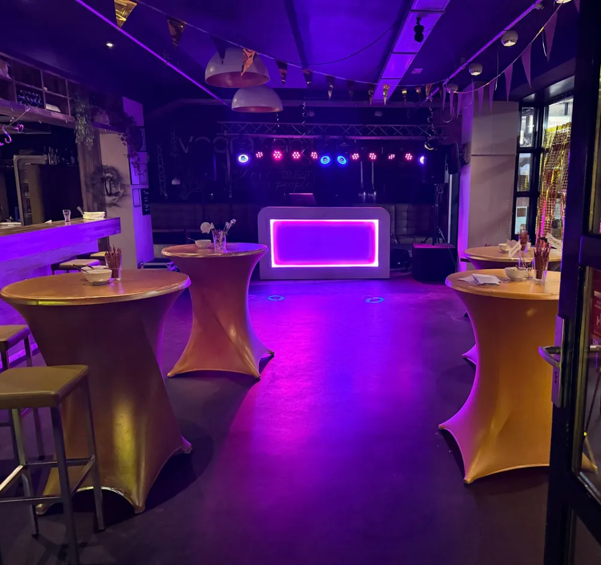
Reserveren
Lekker uit eten bij Voorafentoe? Je bent welkom! Wil je zeker zijn van een tafel, dan is reserveren aan te raden, want het is hier altijd gezellig druk.
Reserveer via het formulier of bel ons op 0412 632 636.
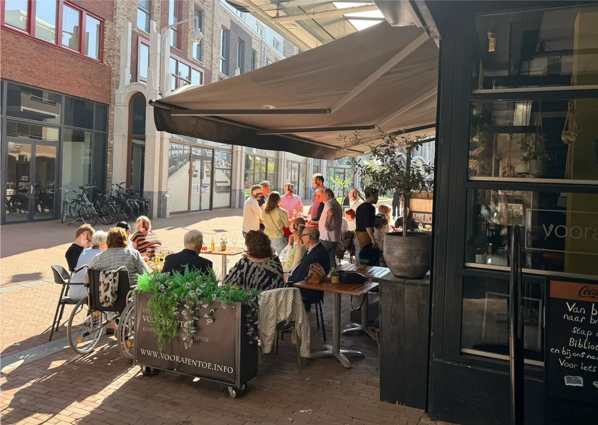
Openingstijden & contact
| Maandag | gesloten |
| Dinsdag | 10.00 – 17.00 |
| Woensdag | 10.00 – 17.00 |
| Donderdag | 10.00 – 19.00 |
| Vrijdag | 10.00 – 17.00 |
| Zaterdag | 10.00 – 17.00 |
| Zondag | gesloten, m.u.v. koopzondag |
eeterij Voorafentoe
Galerij 2, 5341 CL Oss